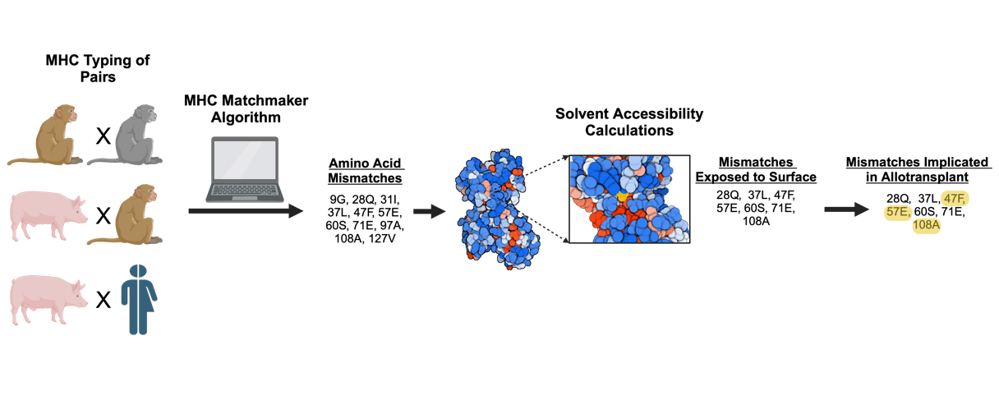

MHC-Matchmaker documentation
Welcome to the MHC-Matchmaker documentation. This tool provides rankings for MHC compatibility between donors and recipients originating from different species.
Contents:
References
Kazutaka Katoh, John Rozewicki, and Kazunori D Yamada. MAFFT online service: multiple sequence alignment, interactive sequence choice and visualization. Briefings in Bioinformatics, 20(4):1160–1166, 09 2017. URL: https://doi.org/10.1093/bib/bbx108, doi:10.1093/bib/bbx108.
Joseph M. Ladowski, Henry Chapman, Isabel DeLaura, Imran J. Anwar, Janghoon Yoon, Zheng Chen, Adella Clark, DongFeng Chen, Stuart Knechtle, Annette Jackson, Bruce Rogers, and Jean Kwun. Allosensitisation in nhp results in cross-reactive anti-sla antibodies not detected by a lymphocyte-based flow cytometry crossmatch. HLA, 104(1):e15599, 2024. URL: https://onlinelibrary.wiley.com/doi/abs/10.1111/tan.15599, doi:https://doi.org/10.1111/tan.15599.
Jaspreet Singh, Thomas Litfin, Kuldip Paliwal, Jaswinder Singh, Anil Kumar Hanumanthappa, and Yaoqi Zhou. SPOT-1D-Single: improving the single-sequence-based prediction of protein secondary structure, backbone angles, solvent accessibility and half-sphere exposures using a large training set and ensembled deep learning. Bioinformatics, 37(20):3464–3472, October 2021. doi:10.1093/bioinformatics/btab316.